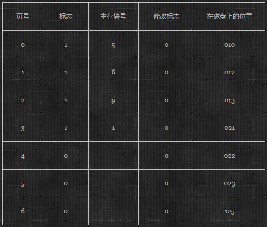
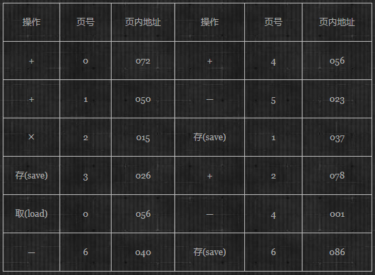
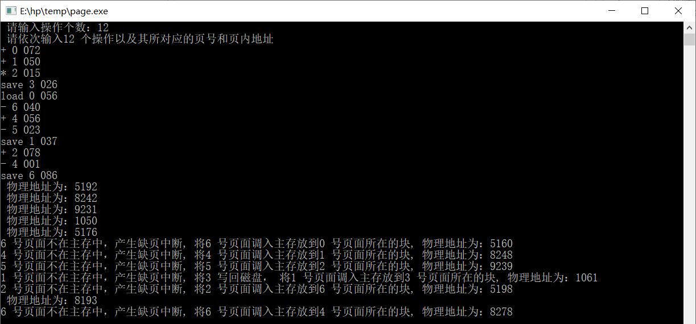

模拟页式虚拟存储管理中硬件的地址转换和用先进先出调度算法处理缺页中断
实验内容与步骤↓↓↓


执行上述的指令序列来调试你所设计的程序（仅模拟指令的执行，不必考虑指令序列中具体操作的执行）
运行效果如下：

1 #include<iostream>
2 #include<string>
3 using namespace std;
4 int main(){
5 string *operation;//定义“操作“指针
6 int num,*pageNum,*address,t;//定义操作个数,页号,页内地址
7 int pageTable[7][5]={0,1,5,0,10,
8 1,1,8,0,12,
9 2,1,9,0,13,
10 3,1,1,0,21,
11 4,0,-1,0,22,
12 5,0,-1,0,23,
13 6,0,-1,0,125};//定义页表并赋初值
14 int pageNumQueue[4]={0,1,2,3};//页号队列
15 int blockQueue[4]={5,8,9,1};//主存块号队列
16 cout<<" 请输入操作个数：";
17 cin>>num;
18 operation=new string[num];
19 pageNum=new int[num];
20 address=new int[num];
21 //循环num个输入操作,页号,页内地址
22 cout<<" 请依次输入"<<num<<" 个操作以及其所对应的页号和页内地址"<<endl;
23 for(int i=0;i<num;i++){
24 cin>>operation[i];
25 cin>>pageNum[i];
26 cin>>address[i];
27 }
28 //---------------调度算法---------------
29 for(int i=0;i<num;i++){
30 //判断操作所对应的页面是否在主存块中
31 if(pageTable[pageNum[i]][1]==1){//若在主块中,直接输出物理地址
32 cout<<" 物理地址为："<<pageTable[pageNum[i]][2]*1024+address[i]<<endl;
33 }else{
34 pageTable[pageNumQueue[0]][1]=0;//调出的页面标志为0
35 pageTable[pageNumQueue[0]][2]=-1;//调出的页面块号标为-1
36 //若不在主块中,采用先进先出调度算法
37 if(pageTable[pageNumQueue[0]][3]==1){//若修改标志为1，则需写回磁盘
38 cout<<pageNum[i]<<" 号页面不在主存中，产生缺页中断,"<<" 将"<<pageNumQueue[0]<<" 写回磁盘，"<<" 将"<<pageNum[i]<<" 号页面调入主存放到"<<pageNumQueue[0]<<" 号页面所在的块,";
39 }else{
40 //若修改标志为0，直接删除
41 cout<<pageNum[i]<<" 号页面不在主存中，产生缺页中断,"<<" 将"<<pageNum[i]<<" 号页面调入主存放到"<<pageNumQueue[0]<<" 号页面所在的块,";
42 }
43 pageTable[pageNum[i]][1]=1;//把调入页面的标志位置1
44 pageTable[pageNum[i]][2]=blockQueue[0];//给调入页面的块号赋值
45 //pageTable[pageNumQueue[0]][1]=0;//把调出页面的标志位置0
46 cout<<" 物理地址为："<<pageTable[pageNum[i]][2]*1024+address[i]<<endl;
47 t=blockQueue[0];//备份主存块号队列的队头元素
48
49 //页号队列,主存块号队列的处理
50 for(int j=0;j<3;j++){
51 pageNumQueue[j]=pageNumQueue[j+1];
52 blockQueue[j]=blockQueue[j+1];
53 }
54 pageNumQueue[3]=pageNum[i];//将调入内存的页面号添加到队尾
55 blockQueue[3]=t;//将备份的队头元素放置队尾
56 }
57 //判断操作是否为save，若是，则令修改标志为1
58 if(operation[i]=="save"){
59 pageTable[pageNum[i]][3]=1;
60 }
61 }
62 return 0;
63 }
2019-05-02-22:17:43